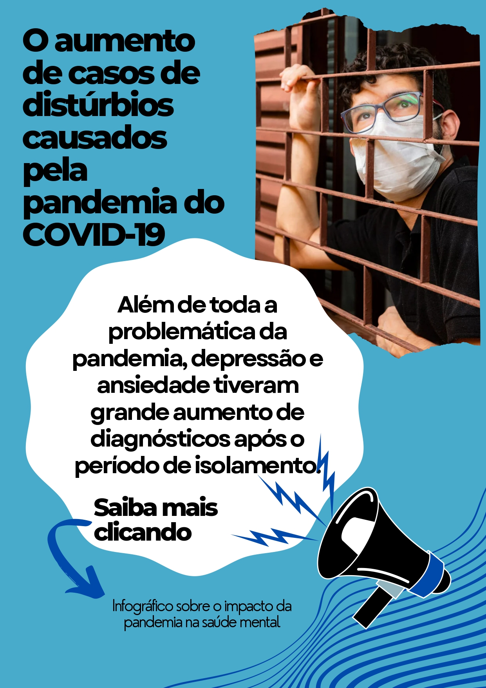

SILENCIOSA E MORTAL
Impacto da pandemia do covid-19
na saúde mental
O aumento dos sintomas psíquicos e dos transtornos mentais durante a pandemia pode ocorrer por diversas causas. Dentre elas, pode-se destacar a ação direta do vírus da Covid-19 no sistema nervoso central, as experiências traumáticas associadas à infeção ou à morte de pessoas próximas, o estresse induzido pela mudança na rotina devido às medidas de distanciamento social ou pelas consequências econômicas, na rotina de trabalho ou nas relações afetivas e, por fim, a interrupção de tratamento por dificuldades de acesso.

A ajuda de amigos ou parentes é essencial para quem está deprimido. No entanto, é preciso fazê-lo de forma responsável. Vamos aprender a fazer isso?
- Ouça com atenção e acolha
- Estimule-a a procurar ajuda profissional
- Desencoraje o consumo de álcool e drogas
- Sugira a prática de esportes
- Não ignore comentários suicidas
- Dê apoio.
- Tenha paciência.